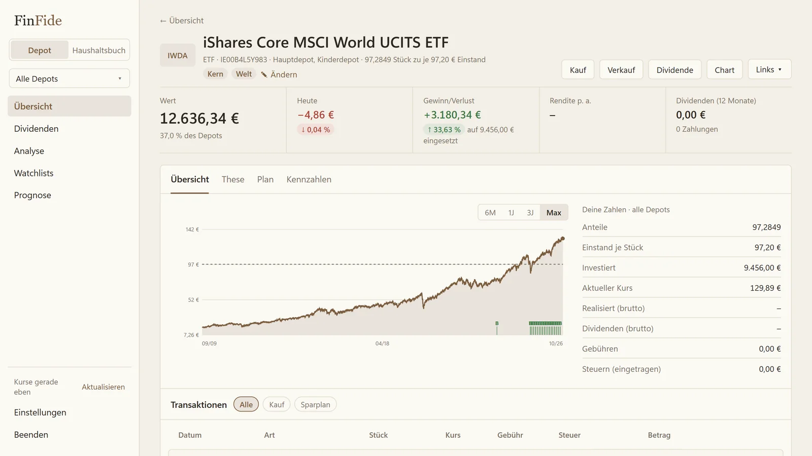
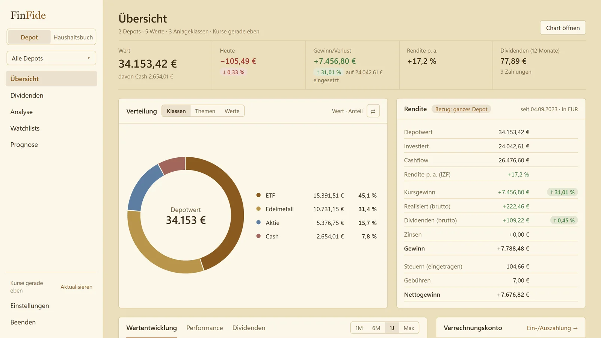
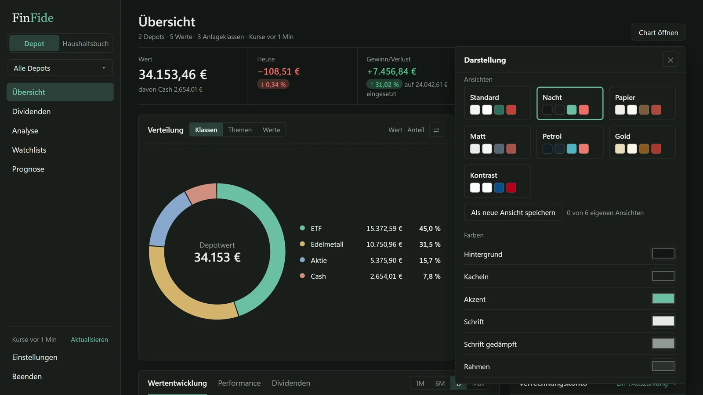

Haushaltsbuch, Depot und Charts in einem Programm.
FinFide verbindet drei Werkzeuge für Privatanleger – ohne neuen Account, ohne Passwort, ohne Abo. Die Daten bleiben auf dem eigenen PC.

- Was
- Haushaltsbuch, Depot-Tracker, Chartanalyse
- Für wen
- Privatanleger mit langem Anlagehorizont
- Voraussetzung
- Windows 10 oder 11, kein Konto
- Bezahlung
- Einmalkauf, kein Abo

Haushaltsbuch
Der Monat auf einen Blick: Einnahmen, Ausgaben, Budgets, Fixkosten und Rücklagen – und was davon ins Depot wandert.
Haushaltsbuch ansehen →Depot-Tracker
Mehrere Depots, alle Anlageklassen, Wertzuwachs mit Rendite p. a., Dividenden-Prognose und eine These je Wert.
Depot-Tracker ansehen →
Chartanalyse
Indikatoren ohne Limit, Watchlists nach Thema, Scan über eigene Bedingungen, Zeichnungen und eigene Käufe im Chart.
Chartanalyse ansehen →Eigene Ansicht
Aussehen nach eigenem Geschmack – für Haushaltsbuch, Depot und Charts getrennt.
- Mehrere DarstellungenZum Beispiel Standard, Nacht, Papier, Matt, Petrol, Gold, Kontrast.
- Eigenes FarbschemaJede Farbposition frei wählbar.
- HintergrundbildEigenes Bild mit einstellbarer Transparenz.



In drei Schritten startklar.
Kaufen
Nach dem Kauf kommt sofort eine E-Mail mit Lizenzschlüssel und Download-Link.
Installieren
Programm starten, Ordner wählen, Lizenzschlüssel eingeben. Kein Konto nötig.
Loslegen
Kategorien anpassen, Depot anlegen oder per CSV einlesen – die Anleitung führt durch.